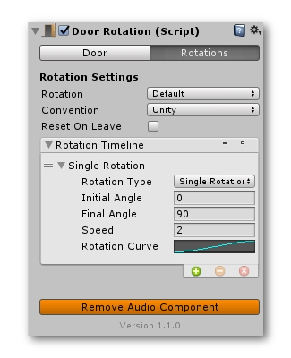
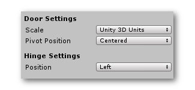
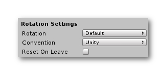
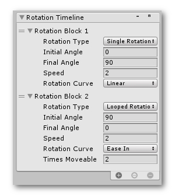
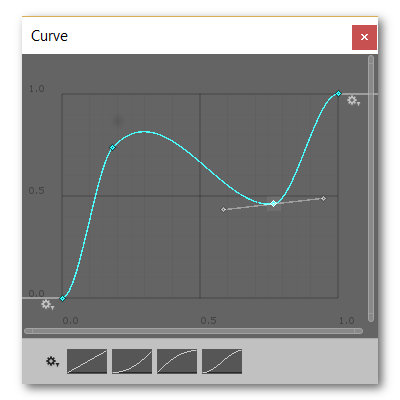

Door Rotation
The rotation component of the door is where you actually control what rotations the door has to perform. In the component itself, you have 2 tabs. You have a 'Door' tab and a 'Rotations' tab.

Door Tab
In the door tab you have the options to set the door parameters. First you'll have to select if the door you're using is scaled in Unity3D units. If you were to create a cube in Unity and put in the same dimensions as your door and the cube and the door take up exactly the same space, your door is is in Unity 3D Units.
Next you'll need to select the pivot position. Is the pivot of the door centered or is it correctly positioned where the hinge should be? To see where the pivot of your door is, set the tool handle in Unity to be active at the object's pivot point.

After that, set the hinge position of the door. Should it be at the left side or the right side of the door?
Rotation Settings
In the rotation tab you can set if the performed rotation should always take the shortest way or if it should take the default way. You can also pick the angle convention. The angle convention basically dictates if degrees should be counted clockwise or counterclockwise. Lastly you have a 'reset on leave' option. This will make it so that when you leave a trigger zone, the door will reset to its original position. This only works when using single rotations.

The next thing you'll need to look at is the rotation timeline. This is one of the most powerful components in Doors+.

The rotation timeline controls all of your rotations chronologically. You can add single rotations, looped rotations or swing rotations. These rotations will play chronologically from top to bottom.
Once you've added a rotation, you can change its settings. For all the rotations you can set both the initial angle, the final angle and the speed of the rotation.
Single rotations are rotations that just get performed once. Looped rotations are rotations that can be repeated for a number of time. Lastly swing rotations are rotations that know 3 states. Let's say the 3 states are -90°, 0° and 90°. The door then has the ability to rotate differently depending on whether the player is standing in front of the door or on the other side. This type of door is commonly used in several games such as Fortnite and Dishonered.
Rotation Curves
The rotation curve can control how the speed of the door will change overtime. You can pick curves between presets such as linear, smoothstep, exponential,... or you can create your own custom curve.
A steeper curve will mean that the door will rotate faster and a less steep curve means that the door will rotate slower. Make sure that your curve starts at 0 and ends at 1 on the x axis and y axis.
